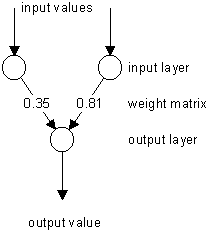
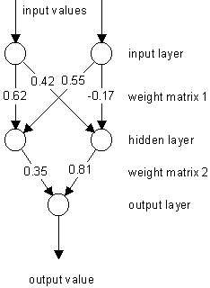
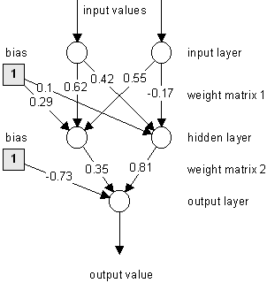
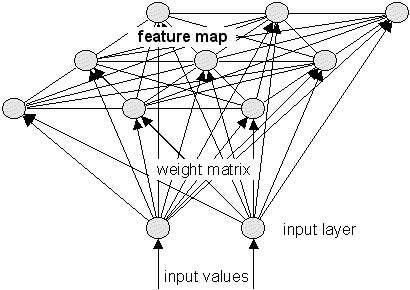
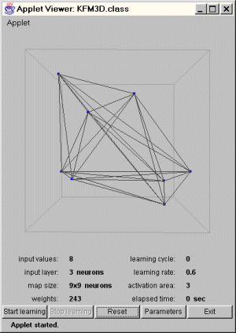
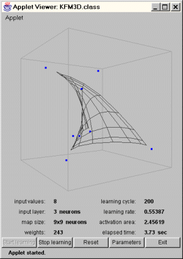
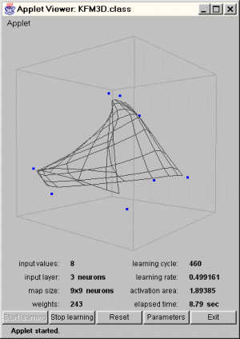
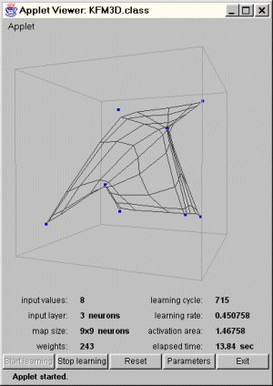
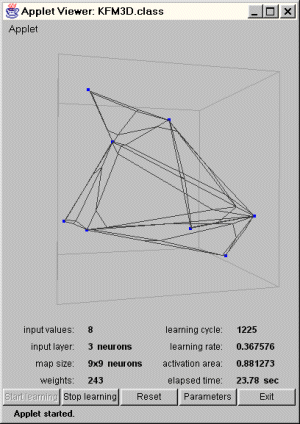
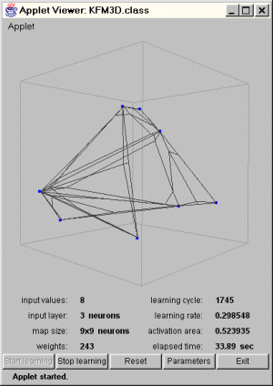

Types of neural nets
Types of neural nets bottom of page
bottom of page| Types of neural nets |
bottom of page |
| jump directly to |
What does "learning" mean refering to neural nets?
Explaining how the human brain learns certain things is quite difficult and nobody knows it exactly.
It is supposed that during the learning process the connection structure among the neurons is changed, so
that certain stimulations are only accepted by certain neurons.
This means, there exist firm connections between the neural cells that once have learned a specific fact,
enabling the fast recall of this information.
If some related information is acquired later, the same neural cells are stimulated and will adapt
their connection structure according to this new information.
On the other hand, if a specific information isn't recalled for a long time, the established connection structure
between the responsible neural cells will get more "weak".
This had happened if someone "forgot" a once learned fact or can only remember it vaguely.
As mentioned before, neural nets try to simulate the human brain's ability to learn.
That is, the artificial neural net is also made of neurons and dendrites.
Unlike the biological model, a neural net has an unchangeable structure, built of a specified number of neurons
and a specified number of connections between them (called "weights"), which have certain values.
What changes during the learning process are the values of those weights.
Compared to the original this means:
Incoming information "stimulates" (exceeds a specified threshold value of) certain neurons
that pass the information to connected neurons or prevent further transportation along the weighted connections.
The value of a weight will be increased if information should be transported and decreased if not.
While learning different inputs, the weight values are changed dynamically until their values are balanced,
so each input will lead to the desired output.
The training of a neural net results in a matrix that holds the weight values between the neurons.
Once a neural net had been trained correctly, it will probably be able to find the desired output to a
given input that had been learned, by using these matrix values.
I said "probably".
That is sad but true, for it can't be guaranteed that a neural net will recall the correct results in any case.
Very often there is a certain error left after the learning process, so the generated output is only
a good approximation to the perfect output in most cases.
The following sections introduce several learning algorithms for neural networks.
 top of page top of page |
Supervised and unsupervised learning
A neural net is said to learn supervised, if the desired output is already known.
Example: pattern association
Suppose, a neural net shall learn to associate the following pairs of patterns.
The input patterns are decimal numbers, each represented in a sequence of bits.
The target patterns are given in form of binary values of the decimal numbers:
| input pattern | target pattern |
| 0001 | 001 |
| 0010 | 010 |
| 0100 | 011 |
| 1000 | 100 |
Neural nets that learn unsupervised have no such target outputs.
It can't be determined what the result of the learning process will look like.
During the learning process, the units (weight values) of such a neural net are "arranged" inside a certain range,
depending on given input values.
The goal is to group similar units close together in certain areas of the value range.
This effect can be used efficiently for pattern classification purposes.
See Selforganization for details.
| top of page |
The algorithm works as follows:
Example:
Suppose you have the following 2-layered Perceptron:
 |
Patterns to be learned: | |
| input 0 1 1 1 |
target 0 1 |
|
Input 1 of output neuron: 0 * 0.35 = 0
Input 2 of output neuron: 1 * 0.81 = 0.81
Add the inputs: 0 + 0.81 = 0.81 (= output)
Compute an error value by
subtracting output from target: 0 - 0.81 = -0.81
Value for changing weight 1: 0.25 * 0 * (-0.81) = 0 (0.25 = learning rate)
Value for changing weight 2: 0.25 * 1 * (-0.81) = -0.2025
Change weight 1: 0.35 + 0 = 0.35 (not changed)
Change weight 2: 0.81 + (-0.2025) = 0.6075
Input 1 of output neuron: 1 * 0.35 = 0.35
Input 2 of output neuron: 1 * 0.6075 = 0.6075
Add the inputs: 0.35 + 0.6075 = 0.9575 (= output)
Compute an error value by
subtracting output from target: 1 - 0.9575 = 0.0425
Value for changing weight 1: 0.25 * 1 * 0.0425 = 0.010625
Value for changing weight 2: 0.25 * 1 * 0.0425 = 0.010625
Change weight 1: 0.35 + 0.010625 = 0.360625
Change weight 2: 0.6075 + 0.010625 = 0.618125
Compute the net error: (-0.81)2 + (0.0425)2 = 0.65790625
| top of page |
The backpropagation algorithm uses a computed output error to change the weight values in backward direction.
To get this net error, a forwardpropagation phase must have been done before.
While propagating in forward direction, the neurons are being activated using the sigmoid activation function.
The formula of sigmoid activation is:
1
f(x) = ---------
1 + e-input
The algorithm works as follows:
Example:
Suppose you have the following 3-layered Multi-Layer-Perceptron:
 |
Patterns to be learned: | |
| input 0 1 1 1 |
target 0 1 |
|
Input of hidden neuron 1: 0 * 0.62 + 1 * 0.55 = 0.55
Input of hidden neuron 2: 0 * 0.42 + 1 * (-0.17) = -0.17
Output of hidden neuron 1: 1 / ( 1 + exp(-0.55) ) = 0.634135591
Output of hidden neuron 2: 1 / ( 1 + exp(+0.17) ) = 0.457602059
Input of output neuron: 0.634135591 * 0.35 + 0.457602059 * 0.81 = 0.592605124
Output of output neuron: 1 / ( 1 + exp(-0.592605124) ) = 0.643962658
Compute an error value by
subtracting output from target: 0 - 0.643962658 = -0.643962658
Value for changing weight 1: 0.25 * (-0.643962658) * 0.634135591
* 0.643962658 * (1-0.643962658) = -0.023406638
Value for changing weight 2: 0.25 * (-0.643962658) * 0.457602059
* 0.643962658 * (1-0.643962658) = -0.016890593
Change weight 1: 0.35 + (-0.023406638) = 0.326593362
Change weight 2: 0.81 + (-0.016890593) = 0.793109407
Value for changing weight 1: 0.25 * (-0.643962658) * 0
* 0.634135591 * (1-0.634135591) = 0
Value for changing weight 2: 0.25 * (-0.643962658) * 0
* 0.457602059 * (1-0.457602059) = 0
Value for changing weight 3: 0.25 * (-0.643962658) * 1
* 0.634135591 * (1-0.634135591) = -0.037351064
Value for changing weight 4: 0.25 * (-0.643962658) * 1
* 0.457602059 * (1-0.457602059) = -0.039958271
Change weight 1: 0.62 + 0 = 0.62 (not changed)
Change weight 2: 0.42 + 0 = 0.42 (not changed)
Change weight 3: 0.55 + (-0.037351064) = 0.512648936
Change weight 4: -0.17+ (-0.039958271) = -0.209958271
Note that this algorithm is also applicable for Multi-Layer-Perceptrons with more than one hidden layer.
"What happens, if all values of an input pattern are zero?"
This changes the structure of the net in the following way:

These additional weights, leading to the neurons of the hidden layer and the output layer, have initial random values and are changed in the same way as the other weights. By sending a constant output of 1 to following neurons, it is guaranteed that the input values of those neurons are always differing from zero.
| top of page |
As mentioned in previous sections, a neural net tries to simulate the biological human brain, and selforganization
is probably the best way to realize this.
It is commonly known that the cortex of the human brain is subdivided in different regions,
each responsible for certain functions.
The neural cells are organizing themselves in groups, according to incoming informations.
Those incoming informations are not only received by a single neural cell, but also influences other cells in its neighbourhood.
This organization results in some kind of a map, where neural cells with similar functions are arranged close together.
This selforganization process can also be performed by a neural network.
Those neural nets are mostly used for classification purposes, because similar input values are represented
in certain areas of the net's map.
A sample structure of a Kohonen Feature Map that uses the selforganization algorithm is shown below:

As you can see, each neuron of the input layer is connected to each neuron on the map.
The resulting weight matrix is used to propagate the net's input values to the map neurons.
Additionally, all neurons on the map are connected among themselves.
These connections are used to influence neurons in a certain area of activation around the neuron with the
greatest activation, received from the input layer's output.
The amount of feedback between the map neurons is usually calculated using the Gauss function:
-|xc-xi|2
-------- where xc is the position of the most activated neuron
2 * sig2 xi are the positions of the other map neurons
feedbackci = e sig is the activation area (radius)
In the beginning, the activation area is large and so is the feedback between the map neurons.
This results in an activation of neurons in a wide area around the most activated neuron.
Unlike the biological model, the map neurons don't change their positions on the map.
The "arranging" is simulated by changing the values in the weight matrix (the same way as other neural nets do).
Because selforganization is an unsupervised learning algorithm, no input/target patterns exist.
The input values passed to the net's input layer are taken out of a specified value range and represent the
"data" that should be organized.
The algorithm works as follows:
Example: see sample applet
The shown Kohonen Feature Map has three neurons in its input layer that represent the values of the x-, y- and z-dimension.
The feature map is initially 2-dimensional and has 9x9 neurons.
The resulting weight matrix has 3 * 9 * 9 = 243 weights, because each input neuron is connected to each map neuron.


In the beginning, when the weights have random values, the feature map is just an unordered mess.
After 200 learning cycles, the map has "unfolded" and a grid can be seen.


As the learning progresses, the map becomes more and more structured.
It can be seen that the map neurons are trying to get closer to their nearest blue input value.


At the end of the learning process, the feature map is spanned over all input values.
The reason why the grid is not very beautiful is that the neurons in the middle of the feature map
are also trying to get closer to the input values.
This leads to a distorted look of the grid.
The selforganization is finished at this point.
I recommend you, to do your own experiments with the sample applet, in order to understand its behaviour.
(A description of the applet's controls is given on the belonging page)
By changing the net's parameters, it is possible to produce situations, where the feature map is unable
to organize itself correctly.
Try, for example, to give the initial activation area a very small value or enter too many input values.
| Types of neural nets |
top of page |
| navigation |
|
[main page]
[content]
[neural net overview] [class structure] [using the classes] [sample applet] [glossary] [literature] [about the author] [what do you think ?] |
 What does "learning" mean refering to neural nets?
What does "learning" mean refering to neural nets?